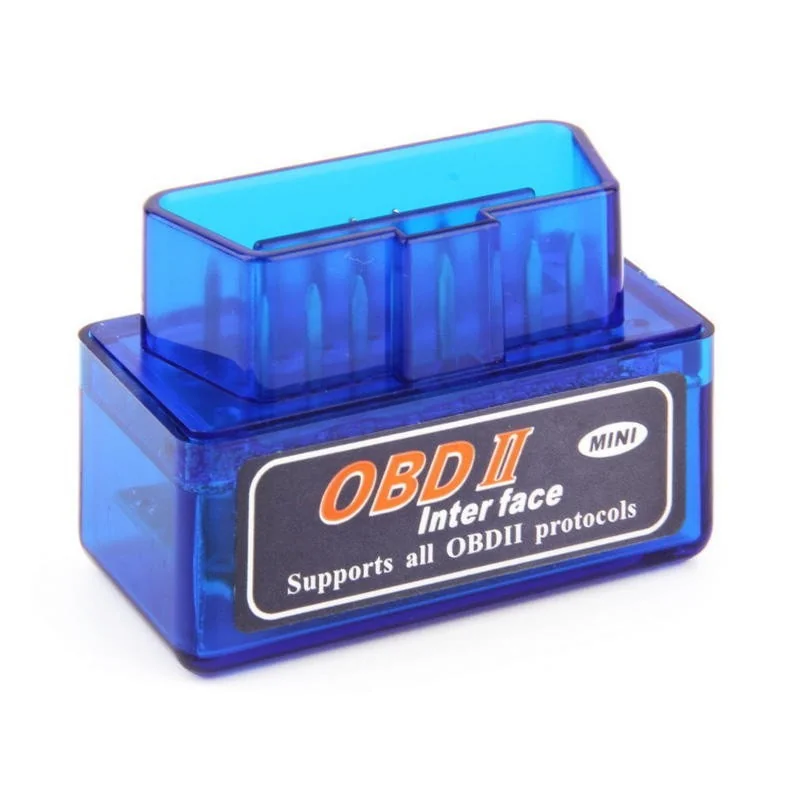

APK for Bluetooth OBD II Scanner
14.01.2025
Down I will provide the link for the torque apk that you cand install on your Android phone in order to interface with a basic OBD II tester.

Download and install Torque.apk on your phone.
How to make a wireguard vpn server on Windows 11
05.06.2024
The first thing you will need in order to get started is a PC running windows 10 or newer that is connected via ethernet cable and is able to stay turned on for an extended period of time, or you need to have some way to switch it on/off remotely.
Download and install Wireguard on your Windows PC.
To be continued....
How to host your website on github
04.06.2024
1) First you need to create an account on github and you should choose a short username if it is available.
2) Create your first public repository (it is better if the repository also has a shorter name).
3) Go into the settings for your newly created repository then click "Pages" and create a new "Public page".
4) In the Pages tab you can view the url where your website is available at and if you don't like that url you can always set a custom "CNAME" domain name using a service like No-Ip.
I also recommend checking
the enforce HTTPS button so that the connection to your website is always secured.